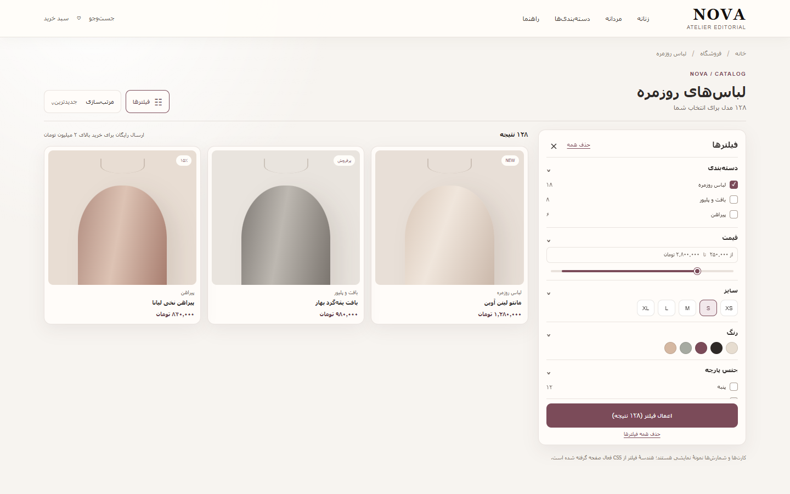
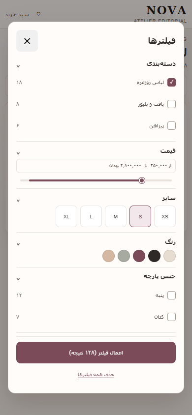

01
نمای دسکتاپ
ریل در سمت راست · نتایج در سمت چپ

باز280px حداقل · عرض منعطف
بستهریل محو میشود، شبکه باز میشود
240 msPROPOSED · power2.in / out
ریل دسکتاپ و گفتوگوی موبایل، با خروج کامل و قابل پیشبینی
ریل در سمت راست · نتایج در سمت چپ

گفتوگوی متمرکز · قفل اسکرول

کاهش حرکتتغییر وضعیت فوری، بدون جابهجایی